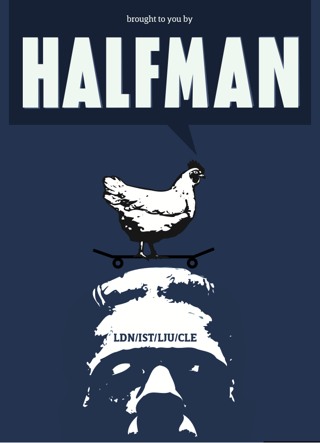

An interactive comedy about the 1683 Siege of Vienna in...
Vienna, 1683
After months of laying siege to the city, Kara Mustafa, Grand Vizier of the Ottoman Empire is still struggling to find a way to take it – in a civilized manner, of course. Meanwhile, Katrina Obermann, fresh-faced but surprisingly thoughtful for a Austrian peasant, starts her new life of slavery; Selim the scribe has had it up to here with the Vizier and his idiotic ideas; Franz the Viennese baker’s surreptitious assault on the Ottoman camp is taking shape – literally; and foot-soldier Murad, son of Murad, is hungover, and not in the mood for any “final assault” bullshit at all.
© 2020 Jim Kosem | Halfman
